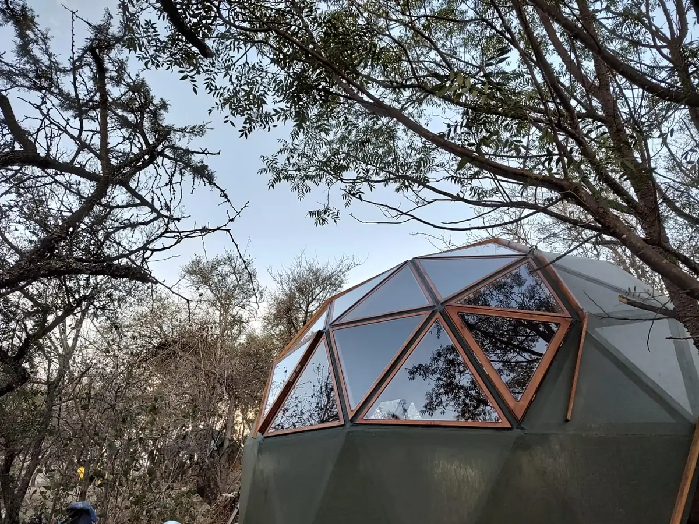

En proceso...
Este domo será un verdadero observatorio al cielo, desde aquí se podrá apreciar la inmensidad del cosmo, las estrellas sus constelaciones y la plenitud de la luna.
Este domo tendrá un caracter muy íntimo y acogedor, que invitará a relajar y disfrutar.